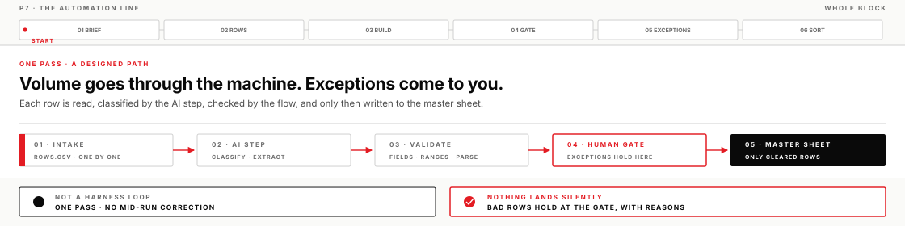
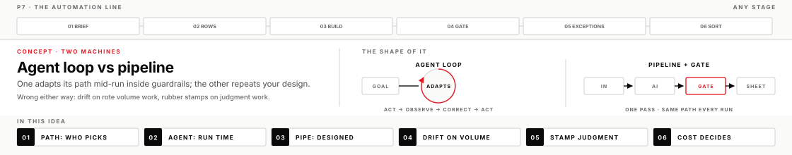
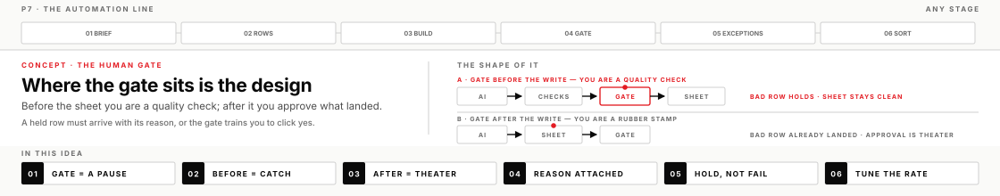
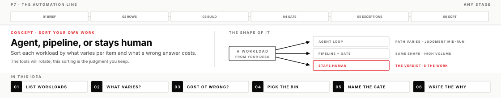

Not every job wants a thinking machine that adapts as it goes. Today you build the other machine — a fixed path that works through volume on its own and holds every exception for your judgment.
DayThursday PM
BlockP7
Time~3–3.5 hr after the 30 min lead demo
Toolsn8n + AI step · Codex app support
Your progress0 / 21 · 0%
The other machine
All week you have directed an agent loop — a machine that reads the situation, acts, observes the result, and corrects, inside guardrails you set. That machine earns its keep when the path to the goal is unknown. A large share of real work is not like that. It is the same decision, in the same shape, five hundred times: invoices to code, tickets to route, field reports to fold into one master picture. Pointing an adaptive agent at that work buys you cost and drift; leaving it to humans buys you a backlog.
For that work you want a pipeline — a path you design once that runs the same way every time, with an AI step doing the reading and a human gate holding anything doubtful for you. This afternoon you build one in n8n: rows in, AI classify and extract, machine checks, and a master sheet that only cleared rows can reach. Then comes the part that outlives every tool in the room: sorting your own work into what belongs to each machine.
What you will leave with
A working n8n flow — batch in → AI classify/extract → validate → master sheet — with a human-approval gate that holds exceptions
At least three exceptions adjudicated with written reasons, including one wrong-but-confident row your gate caught
A discrimination write-up: which of your real workloads belong to an agent loop, a pipeline, or neither — criteria, not vibes
Draft 30/60/90 horizons in your Transfer file, seeded with one workload to pipeline and one that must stay agentic
Before you start
n8n starts and lets you in: run n8n start in PowerShell, open localhost:5678, and sign in with the owner account you recorded in pre-work — it lives only on your laptop. Forgot the password? Flag it — n8n has a command-line reset; do not reinstall. If n8n start exits immediately with a version message, that is the Node range talking, not a broken install — n8n wants Node 22.22 up to the current LTS line.
Sample rows on disk: mission_flesh/p7/rows.csv, with discrimination_template.md beside it
Operator templates present in your Codex app project (DIRECTION_BRIEF.md, OPERATOR_LOG.md)
Your OpenAI key (sk-proj-…) within reach — the AI step inside n8n runs on it, and Stage 03 is where you store it as your first n8n credential
Lead operate-along
The lead runs this same page on screen — brief co-written live, the flow wired node by node in view, holds and promotions narrated. You still run your own chair, and you check a box when you finish the step, not when you watch it.
Right after lunch · watch-only demo (30 min)
First comes a demo you watch rather than run: the Codex built-in browser pulls a few facts from scoped public pages and collates a short slideshow; then one claim gets verified and a runaway expand gets stopped. You install nothing — no plugins, no Chrome extension. Keep the lesson it carries: a deck a browsing model collated is a claim list until a claim has been verified — deck ≠ truth.

How to think about the line
Five ideas carry the afternoon; each earns a second look while the line is running.
Two machines, one choice

An agent loop decides its next move at run time: the model reads what just happened and picks what to do next, every run, inside your guardrails. A pipeline's path is decided at design time, by you, once. That is the whole difference, and everything else follows from it. In the loop, the model owns the path and you own the bounds; in the line, you own the path and the model fills exactly one station you built for it.
Choosing wrong costs you in both directions. Put a free-roaming agent on five hundred near-identical rows and you pay for five hundred separately-reasoned paths — slow, expensive, and worst of all unauditable, because the path is different every time and drift accumulates where you cannot see it. Put a pipeline on judgment work and the opposite failure appears: the path cannot adapt, so everything unusual either fails outright or gets forced through a shape that does not fit it — and the human at the gate, facing a wall of forced-through items, degrades into a stamp.
At work the choice comes down to two questions you can ask of any workload — what varies per item, and what a wrong answer costs — with volume as the threshold that makes a pipeline worth building at all. A varying path points at an agent. Same shape at volume points at a pipeline. A high cost of error points at a gate — or at keeping the work human entirely.
One pass, no course correction
Nothing in the flow you are about to build re-reads its own output and revises. Each node fires once per item and hands the result forward; nothing in this line is a harness loop — no observe-and-correct beat exists anywhere in the path. That is not a defect — it is what makes the line cheap, fast, and predictable. But it means every gram of judgment you would normally spend mid-run has to be spent up front instead, in exactly two places: the shape of the path, and the placement of the gate.
The mistake to watch for in yourself: after four days of cothinking, you are used to a machine that pushes back — one that notices when input looks wrong and says so. The AI step in this line will not. Hand it garbage and it processes garbage, fluently and with perfect confidence, and the flow moves on. In a chat you would have caught that in the next message. Here there is no next message. The line's safety has to be engineered in, because nothing inside it will sense trouble.
This gives you a sharp first question for any automation proposal you meet at work: where does this path get to correct itself? If the answer is nowhere — and for most pipelines it is — then the design of the path and the placement of the gate are carrying all the judgment, and those two things deserve most of the review time.
The human gate is a design decision

A gate is a point where the flow stops and a person decides. n8n dresses this up as a human-approval step, but the concept is older than any tool: work holds until someone with judgment releases it. Two properties make a gate real rather than decorative. First, placement: a gate upstream of the master sheet means bad rows provably never land, and the sheet stays something you can vouch for. A gate downstream means the error is already the record by the time you see it — your "review" is theater, and your approval a stamp with your name on it.
Second, the hold has to arrive with its evidence: the row, the AI's output, and the reason it held. A gate that shows you "approve? yes/no" with nothing attached is training you to click yes — and after the twentieth click you will, every time. The rate matters too: a gate that holds everything stops being read, and a gate that holds nothing is a drawing of a gate. You tune toward a rate where every hold deserves your attention and gets it.
At work, whenever someone asks you to "review" automated output, your first question is now mechanical: where does the review sit relative to commit? Before commit, you are a quality check. After, you are a rubber stamp with a login — and it is better to know which job you have been given.
The line must not trust the AI step
Validation here means machine-checkable tests the flow itself runs on the AI's output before anything lands: required fields present, values drawn from an allowed set, numbers inside plausible ranges, output parseable at all. The mechanism one level down: the model returns text. The flow parses that text into structure, and every node downstream trusts the structure completely. That seam — free text becoming trusted data — is where automation lines break, so that is exactly where the checks go, and they fail closed: anything that does not pass routes to the gate, never to the sheet.
This is the same standard you have applied all week — evidence beats the model's self-assessment — with one difference that changes how you write it: here the consumer of the AI's output is a machine, and a machine cannot squint. Every check must be written as a rule the flow can execute. "Looks reasonable" is not a rule. "Region is one of EU, US, GLOBAL" is.
One move today makes this concrete: rows.csv carries an expected_gate column — the answer key you will grade your gate against. Drop that column before the AI step ever sees a row. Feeding the answer key to the system under test voids the test, and that rule is worth keeping long after this week: never let the machine being checked see its own check.
The sort you keep

The lasting skill in this room is not wiring n8n nodes — it is the sort. Take any workload from your desk and place it in one of three bins: agent loop, pipeline with a gate, or stays human. The two questions you already have: what varies per item, and what a wrong answer costs — with volume, as before, the threshold that makes a pipeline worth building. The stays-human bin has its own test: when the verdict is the work product — a hiring call, a credibility judgment, an accept/reject that someone downstream relies on precisely because a person made it — then automating it does not speed the work up, it removes the thing that made it valuable.
Both blanket policies fail. "Automate everything" quietly converts judgment work into rubber-stamped throughput and you discover the damage in an audit. "AI is a chat tool" leaves half your volume work on human keyboards out of habit. The sort is the discipline that beats both, and it is written down, per workload, with reasons — which is exactly what the template you fill in Stage 06 forces.
n8n will rotate. So will the model in the AI step, and the vendor behind it. The sorted list — and the two questions that produced it — transfer to whatever replaces them.
Optional field guide · 45–60 min
Choose from the workload evidence
The Machine-Choice Field Manual extends the three-bin sort into a scored portfolio method, with hard vetoes, routing boundaries, counterexamples, and revisit triggers for work that sits near an edge.
Before you move on
A completed lesson means more than a successful run. Evidence must survive adversarial review — happy-path-only, no human gate, or "automation is always better" with no discrimination are all named not-yet conditions. Full checklist: these P7 lesson outcomes.
If you get stuck
The AI step won't behave. Test it alone on one row and read its raw output before touching the rest of the line. Prose instead of your format means the prompt never pinned a contract. An auth-looking failure with 429 or quota in it means a capped key — flag it rather than reinstalling.
The gate holds everything, or nothing. Read one execution end-to-end. Fix parsing before thresholds, and confirm the gate sits before the write — both failure modes usually live in those two places.
The write-up feels like vibes. Let the two questions do the forcing — what varies per item, and what a wrong answer costs — then write the answers into the template's why columns. If you can't name either for a workload, that workload stays human — which is itself a finding.
Narrow the data scope, never the judgment standard — three rows through a gated line beats eight through an ungated one.
Ask the lead to diagram the one concept blocking you, then continue on your own chair.